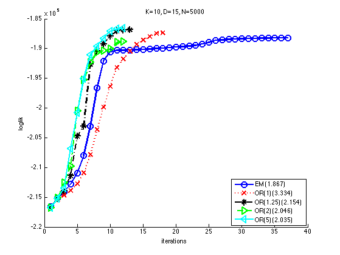
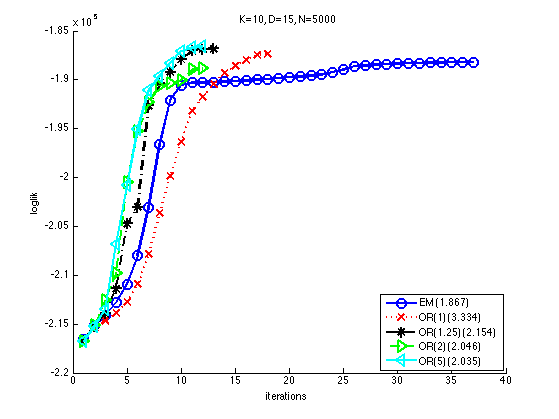
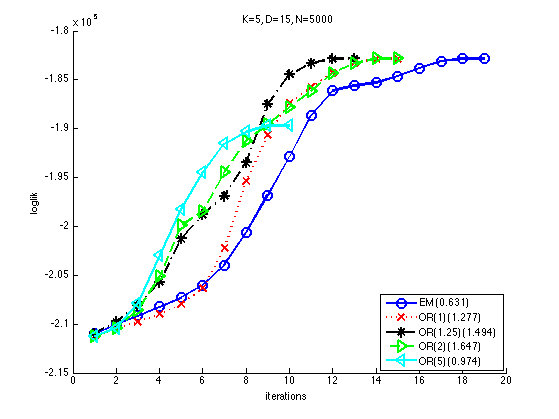
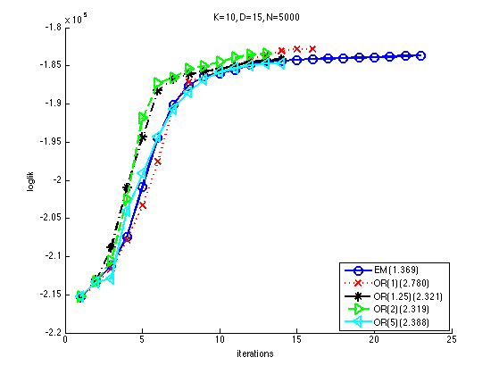

Fit a Gaussian Mixture Model using over-relaxed EM
We use synthetic data sampled from a GMM PMTKauthor Krishna Nand Keshava Murthy
% This file is from pmtk3.googlecode.com ntrials = 2; for trial = 1:ntrials
setSeed(trial);
D = 15; N = 5000;
Clusters = 10;
mu = rand(D,Clusters);
mixweight = normalize(rand(1, Clusters));
Sigma = zeros(D,D,Clusters);
for k=1:Clusters
Sigma(:,:,k) = randpd(D);
end
trueModel = mixGaussCreate(mu, Sigma, mixweight);
%trueModel = mixModelCreate(condGaussCpdCreate(mu, Sigma), 'gauss', Clusters, mixweight);
%[fullData] = mixModelSample(trueModel, N);
[fullData] = mixGaussSample(trueModel, N);
Ks = [5 10];
verbose = true;
eta = {[], 1, 1.25, 2, 5}; % over-relaxation increase factor
nmethods = length(eta);
llHist = cell(1, nmethods);
models = cell(1, nmethods);
names = {'EM', 'OR(1)', 'OR(1.25)', 'OR(2)', 'OR(5)'};
[styles, colors, symbols] = plotColors();
for k = 1:length(Ks)
K = Ks(k);
for m=1:nmethods
tic
%[models{m}, llHist{m}] = mixModelFit(fullData, K, 'gauss',...
% 'overRelaxFactor',eta{m}, 'verbose', verbose);
if isempty(eta{m})
[models{m}, llHist{m}] = mixGaussFit(fullData, K, ...
'verbose', verbose);
else
[models{m}, llHist{m}] = mixGaussFitOverrelaxedEM(fullData, K, ...
eta{m}, 'verbose', verbose);
end
tim(m) = toc;
end
figure
hold on
for m=1:nmethods
str= sprintf('%s%s%s', colors(m), symbols(m), styles{m});
plot(llHist{m}, str, 'LineWidth',2,'MarkerSize',10)
legendStr{m} = sprintf('%s (%5.3f)', names{m}, tim(m));
end
legend(legendStr, 'location', 'southeast');
xlabel('iterations'); ylabel('loglik')
title(sprintf('K=%d, D=%d, N=%d', K, D, N));
end
initializing model for EM 1 loglik: -212099 2 loglik: -211442 3 loglik: -210988 4 loglik: -210520 5 loglik: -210006 6 loglik: -209330 7 loglik: -208399 8 loglik: -207219 9 loglik: -205680 10 loglik: -203261 11 loglik: -200575 12 loglik: -198264 13 loglik: -195955 14 loglik: -194075 15 loglik: -193314 16 loglik: -193272 17 loglik: -193271 2 loglik: -211459 3 loglik: -210937 4 loglik: -210330 5 loglik: -209620 6 loglik: -208794 7 loglik: -207782 8 loglik: -206708 9 loglik: -205689 10 loglik: -204427 11 loglik: -202665 12 loglik: -200846 13 loglik: -199500 14 loglik: -198230 15 loglik: -197257 16 loglik: -196545 17 loglik: -195574 18 loglik: -194211 19 loglik: -193156 20 loglik: -192908 21 loglik: -192898 2 loglik: -211524 3 loglik: -210904 4 loglik: -209971 5 loglik: -208765 6 loglik: -206819 7 loglik: -202151 8 loglik: -198395 9 loglik: -195533 10 loglik: -193517 11 loglik: -193339 2 loglik: -211578 3 loglik: -210872 4 loglik: -209217 5 loglik: -207890 6 loglik: -206348 7 loglik: -203551 8 loglik: -201207 9 loglik: -199329 10 loglik: -198550 11 loglik: -197855 12 loglik: -195344 13 loglik: -193858 14 loglik: -193611 15 loglik: -193273 16 loglik: -193271 2 loglik: -211444 3 loglik: -210842 4 loglik: -209889 5 loglik: -209291 6 loglik: -207452 7 loglik: -203402 8 loglik: -200493 9 loglik: -198244 10 loglik: -196662 11 loglik: -195761 12 loglik: -195348 13 loglik: -194850 14 loglik: -193810 15 loglik: -193343 16 loglik: -193274 initializing model for EM 1 loglik: -216589 2 loglik: -215158 3 loglik: -214152 4 loglik: -212799 5 loglik: -210897 6 loglik: -207982 7 loglik: -203076 8 loglik: -196665 9 loglik: -192104 10 loglik: -190537 11 loglik: -190317 12 loglik: -190273 13 loglik: -190235 14 loglik: -190185 15 loglik: -190139 16 loglik: -190083 17 loglik: -190012 18 loglik: -189937 19 loglik: -189843 20 loglik: -189755 21 loglik: -189686 22 loglik: -189595 23 loglik: -189457 24 loglik: -189206 25 loglik: -188953 26 loglik: -188631 27 loglik: -188534 28 loglik: -188455 29 loglik: -188412 30 loglik: -188360 31 loglik: -188316 32 loglik: -188289 33 loglik: -188266 34 loglik: -188235 35 loglik: -188208 36 loglik: -188188 37 loglik: -188176 2 loglik: -215374 3 loglik: -214647 4 loglik: -213865 5 loglik: -212772 6 loglik: -210920 7 loglik: -207827 8 loglik: -203662 9 loglik: -199848 10 loglik: -196384 11 loglik: -193167 12 loglik: -191792 13 loglik: -190483 14 loglik: -189300 15 loglik: -188590 16 loglik: -188014 17 loglik: -187428 18 loglik: -187338 2 loglik: -215238 3 loglik: -213948 4 loglik: -211386 5 loglik: -204734 6 loglik: -203052 7 loglik: -192675 8 loglik: -190381 9 loglik: -189230 10 loglik: -187924 11 loglik: -187044 12 loglik: -186848 13 loglik: -186840 2 loglik: -215176 3 loglik: -212622 4 loglik: -209810 5 loglik: -200501 6 loglik: -195324 7 loglik: -192333 8 loglik: -190629 9 loglik: -190324 10 loglik: -190057 11 loglik: -188990 12 loglik: -188881 2 loglik: -215217 3 loglik: -213512 4 loglik: -206827 5 loglik: -200767 6 loglik: -195094 7 loglik: -191109 8 loglik: -189612 9 loglik: -188296 10 loglik: -187054 11 loglik: -186712 12 loglik: -186614
 
 initializing model for EM 1 loglik: -210973 2 loglik: -210037 3 loglik: -209146 4 loglik: -208236 5 loglik: -207279 6 loglik: -206015 7 loglik: -203959 8 loglik: -200630 9 loglik: -196826 10 loglik: -192874 11 loglik: -188690 12 loglik: -186095 13 loglik: -185617 14 loglik: -185302 15 loglik: -184649 16 loglik: -183821 17 loglik: -183077 18 loglik: -182841 19 loglik: -182839 2 loglik: -210446 3 loglik: -209802 4 loglik: -208987 5 loglik: -207993 6 loglik: -206364 7 loglik: -202245 8 loglik: -195412 9 loglik: -190681 10 loglik: -187410 11 loglik: -185738 12 loglik: -184312 13 loglik: -183279 14 loglik: -182852 15 loglik: -182839 2 loglik: -209776 3 loglik: -208116 4 loglik: -205714 5 loglik: -201257 6 loglik: -198804 7 loglik: -196908 8 loglik: -193495 9 loglik: -187495 10 loglik: -184463 11 loglik: -183325 12 loglik: -182849 13 loglik: -182842 2 loglik: -210468 3 loglik: -208563 4 loglik: -205128 5 loglik: -199935 6 loglik: -198464 7 loglik: -194522 8 loglik: -191281 9 loglik: -189593 10 loglik: -187814 11 loglik: -186187 12 loglik: -184323 13 loglik: -183316 14 loglik: -182839 15 loglik: -182839 2 loglik: -210436 3 loglik: -207860 4 loglik: -202936 5 loglik: -198223 6 loglik: -194439 7 loglik: -191525 8 loglik: -190298 9 loglik: -189708 10 loglik: -189684 initializing model for EM 1 loglik: -215299 2 loglik: -213274 3 loglik: -211188 4 loglik: -207384 5 loglik: -200887 6 loglik: -194395 7 loglik: -190062 8 loglik: -187639 9 loglik: -186367 10 loglik: -185985 11 loglik: -185550 12 loglik: -184885 13 loglik: -184443 14 loglik: -184339 15 loglik: -184245 16 loglik: -184118 17 loglik: -184051 18 loglik: -183992 19 loglik: -183933 20 loglik: -183899 21 loglik: -183813 22 loglik: -183686 23 loglik: -183671 2 loglik: -213617 3 loglik: -211612 4 loglik: -207863 5 loglik: -203348 6 loglik: -197569 7 loglik: -190557 8 loglik: -187172 9 loglik: -186330 10 loglik: -185731 11 loglik: -184880 12 loglik: -184127 13 loglik: -183551 14 loglik: -183051 15 loglik: -182856 16 loglik: -182819 2 loglik: -213057 3 loglik: -208853 4 loglik: -200961 5 loglik: -194363 6 loglik: -188297 7 loglik: -186702 8 loglik: -186154 9 loglik: -185788 10 loglik: -185447 11 loglik: -184919 12 loglik: -184556 13 loglik: -184308 14 loglik: -184161 2 loglik: -213309 3 loglik: -210583 4 loglik: -202540 5 loglik: -191890 6 loglik: -187252 7 loglik: -186574 8 loglik: -185380 9 loglik: -185031 10 loglik: -184447 11 loglik: -183935 12 loglik: -183610 13 loglik: -183436 2 loglik: -213357 3 loglik: -212908 4 loglik: -204011 5 loglik: -199111 6 loglik: -194281 7 loglik: -190676 8 loglik: -188446 9 loglik: -186802 10 loglik: -185799 11 loglik: -185375 12 loglik: -184964 13 loglik: -184735 14 loglik: -184716 
end